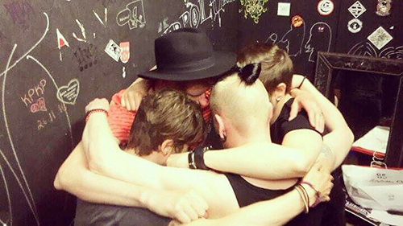

20th Anniversary
Ronnie Starr celebrates 20th anniversary of debut album First Take. The co-operation with producer Lasse Kurki, the vocalist and guitarist of Lemonator, was ready for everyone to enjoy when First Take was released in September 2003. Now, twenty years later the magical sound and live performances will be available for you once again to enjoy!
